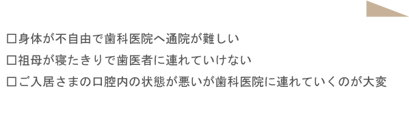

訪問歯科とは
歯医者さん来られなくなった患者さんのご自宅や介護施設へこちらから赴く、歯科治療を行ういわば「出張歯医者さん」です。 虫歯や歯周病の予防だけでなく誤嚥性肺炎の予防として重要視されている「口腔ケア」はもちろん、「虫歯治療」「入れ歯(義歯)の調整・作製」を含む院内と同じ治療が基本的にはすべて可能です。
このような方に
訪問歯科診療を受けることができるのは、以下に挙げるような方々です。

訪問歯科で受けられる治療
訪問歯科は、患者さまのご自宅で行う診療であることから、受けられる治療の範囲もかなり限定されていると思われがちです。けれども、実際の訪問診療では、実にたくさんの治療を行うことができます。
虫歯治療・歯周病治療
入れ歯治療
摂食嚥下（せっしょくえんげ）の検査とリハビリ
訪問歯科では、携帯用の器材を活用することで、虫歯治療を行うことができます。歯のクリーニングやスケーリングなども実施可能ですので、歯周病治療にも対応しております。
お口の中の診査や模型製作のための型取りなどをご自宅で行わせていただきます。それをもとに、入れ歯を製作いたします。また、入れ歯の調整や修理も承っております。
ご高齢の方は、食べ物をしっかり噛めなかったり、飲み込めなかったりすることが多くなります。その結果、食べたものが食道ではなく気道へと誤って入り込んでしまい「誤嚥性肺炎（ごえんせいはいえん）」という重篤な肺の病気を引き起こしてしまうことがあります。訪問診療では、そうした摂食（たべること）と嚥下（飲み込むこと）が正常に行えているかを調べ、必要であればリハビリテーションを実施します。
訪問歯科の対応エリア
訪問可能なエリアは、当院より半径16キロ圏内となっております。詳細につきましては、お電話でお問合せいただけたら幸いです。
訪問歯科治療の大切さ
歯科医院への通院が難しい方は、足腰だけではなく、手やその他の部位にも不自由を抱えていらっしゃる方が少なくありません。訪問診療が必要な人ほど、日々の口腔ケアを十分に行えていない傾向にあります。 イクシマ歯科クリニックでは、そうした方々のお口や全身の健康をお守りするために、訪問歯科診療に力を入れております。お口のことでお困りの際には、ぜひお気軽に訪問歯科についてご相談ください。